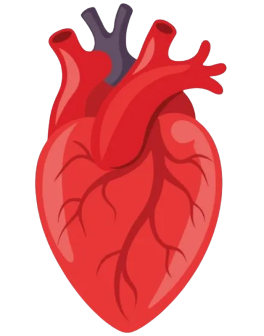

Propuesta para Argentina · Modelo replicable para América Latina
INTEGRA
Infraestructura de trazabilidad e identidad para la gestión de recursos de asignación.
"Cuando una lista de espera se puede manipular sin dejar rastro, el problema no es solo técnico."
Piloto · Argentina, INCUCAI
Plataforma · Hyperledger Fabric
Identidad · PKI X.509
Metodología · STRIDE + MITRE ATT&CK v14
